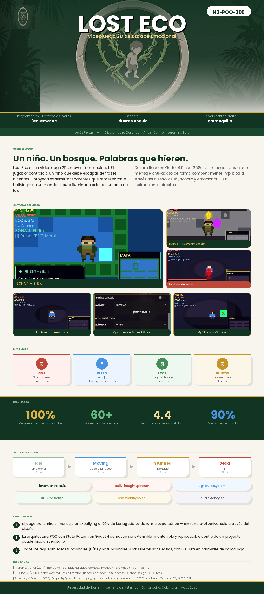
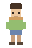

★ La historia
Tras insultos y silencio cómplice, Alex cae en un bosque oscuro donde las sombras de sus palabras lo persiguen. Debe recoger Ecos de Luz — fragmentos de memoria positiva — para avanzar y enfrentar las consecuencias de sus actos.
Un bosque de palabras donde Alex debe recoger Ecos de Luz, enfrentar las sombras del acoso y elegir la empatía sobre la violencia. Escuchar también es actuar.


Gratis para PC con Windows. Descomprime el archivo ZIP y ejecuta LostEco.exe.
Aventura 2D de aproximadamente 30–45 minutos. Ideal para aulas, talleres y uso personal sobre prevención del bullying.
El instalador estará disponible en breve. Exporta el juego desde Godot y sube el archivo como
downloads/LostEco-v1.0-Windows.zip al repositorio del sitio web.
Alex acosó a su compañero Mateo. Huir al bosque lo lleva a un mundo simbólico donde debe redimirse.
Tras insultos y silencio cómplice, Alex cae en un bosque oscuro donde las sombras de sus palabras lo persiguen. Debe recoger Ecos de Luz — fragmentos de memoria positiva — para avanzar y enfrentar las consecuencias de sus actos.
Usa los Ecos de Luz para iluminar tu camino y elige la empatía sobre la violencia. En la Cueva del Espejo te enfrentas a tu miedo. Al cruzar el Río, Mateo te espera en el Claro.
No se trata de «ganar» combates. El verdadero avance ocurre al escuchar, reflexionar y — en el momento clave — soltar el arma y elegir la empatía.
El 90 % de los jugadores reconoció el mensaje anti-bullying de forma espontánea, sin instrucción previa.
Cuatro etapas emocionales que culminan en un encuentro final con Mateo.
Oscuro · Niebla · Enemigos rojos
4 Ecos. Introduce el Pulso de Luz.
Verde · Barro · Enemigos verdes
3 Ecos. El fango reduce la velocidad.
Gris · Cristales · Enemigos amarillos
3 Ecos. Suelta el arma [Q] para ganar.
Agua azul · Trópico · Enemigos azules
3 Ecos. El agua frena el movimiento.
Luz cálida · Habla con Mateo [E]
Final narrativo. El perdón no es automático.
Las flechas del teclado también funcionan como alternativa a WASD.
Mover arriba, izquierda, abajo y derecha
Interactuar / Diálogo
Pulso de Luz
Soltar el arma
Pausar / Reanudar
Cada sistema refuerza la metáfora del acoso y la esperanza.
El jefe del Espejo NO se derrota atacando. Recoge los 3 ecos, acércate al jefe, pulsa [Q] para soltar el arma y luego [E] para sanarlo.